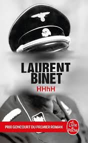

HHhH1
- Auteur: Laurent Binet
- Catégorie: Roman
- Éditeur: Grasset
- Date de publication: 2010
- Nombre de pages: 406
- Commentaire: Raconte l'histoire de l'opration anthropoide durant la seconde guerre mondial contre les allemands
- Note: 9/10
Synopsis
Raconte l'histoire de l'operation anthropoid durant la seconde guerre mondial, qui avait pour but de tuer Heydrich à prague par 3 militaire slovaque Jozef Gabčík, Jan Kubiš et Josef Valčík. L'auteur prend un point de vue personnel en parlant de ses voyages pour la prise d'information et du déroulement de l'opération